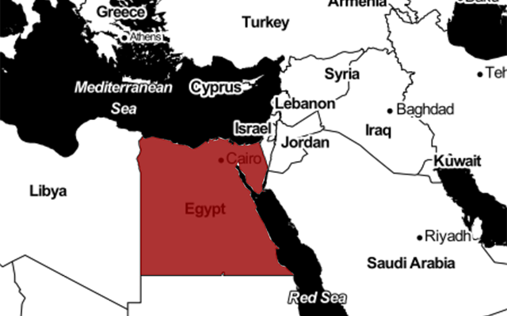
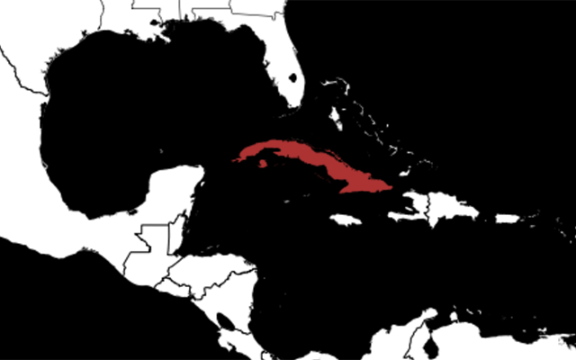

Russia
FACTS
- Several legislative measures passed ostensibly to counter terrorism and ‘extremist’ content are open to broad interpretation and have allowed for a sweeping crackdown on free media, civil society, and views that run counter to the Kremlin line.
- Authorities from Roskomnadzor, a Russian agency tasked with overseeing mass media and electronic communications, carries out the work of implementing internet censorship, drawing from three sources: the courts, state regulators, and regular citizens.
- From November 2012 - March 2015, Russia blocked 52,000 web sites.
POPULAR CIRCUMVENTION TECHNIQUES
- Russia is the second-most popular country for Tor users.
- CDN browser plug-ins, which bypass the need to send a domain name system (DNS) request, are popular among Russian users.
China
FACTS
- China’s Great Firewall is a multifaceted system that utilizes a mix of technological methods, tools, and manpower to restrict access to information in China and exert control over public opinion.
- China reportedly employs millions of employees and civilian volunteers alike in its ‘50 cent party’ to surveil the internet, moderate discussion forums, and post ‘opinions’ that are in line with Party ideology and effectively drown out dissent. While blocking and filtering countless websites, comments, and posts every day, the government also fabricates nearly 450 million social media posts per year.
- China’s Great Cannon, a new ‘offensive’ censorship weapon, is capable of hijacking and redirecting millions of internet users’ traffic to launch “man-in-the-middle” style assaults on websites through sustained distributed denial of service (DDoS) attacks.
POPULAR CIRCUMVENTION TECHNIQUES
- Many Chinese internet users rely on VPNs, or Virtual private networks, to “leap over” the Great Firewall. A VPN encrypts a user’s internet traffic and sends it onward via an intermediary computer. A user’s traffic flows through an encrypted “tunnel,” obscuring its content. A list of popular VPNs used in China can be found here. However, the Chinese government has been known to monitor VPN traffic and cut access when being used to access blocked websites. VPN providers can also log your internet activity.
- Lantern is a free p2p (peer-to-peer) circumvention software that routes internet traffic through a relay of fellow trusted users, so internet users in uncensored regions can provide access to users in censored regions.

Iran
FACTS
- Popular social media networks such as Twitter and Facebook remain blocked in Iran.
- Iran is currently rolling out in phases its own ‘national internet,’ a sort of domestic, Iran-only intranet that cuts off Iranians from the outside world.
- In the absence of popular foreign internet functions and tools, Iran has developed its own, such as Aparat, a browser developed and controlled by the government.
POPULAR CIRCUMVENTION TECHNIQUES
- For Iranian internet users, popular circumvention options include circumvention suite Psiphon and VPN service HotSpot Shield.


Egypt
FACTS
- During the Arab Spring in January 2011, scores of Egyptians turned to circumvention technology amid a massive internet shutdown to access social media platforms blocked by the government.
- Five years later, circumstances have changed but a lack of free speech has remained constant, as critical bloggers and social media users face reprisal from Egypt’s military government under vague laws that empower authorities to censor at will.
- Prison terms have been handed down to Egyptian users for insulting religion online while LGBT netizens have been arrested for posting YouTube videos for the crime of “inciting debauchery.”
- Egypt jailed the second-highest number of reporters in 2015, with 23 journalists in prison, according to CPJ.
POPULAR CIRCUMVENTION TECHNIQUES
- In times of increased censorship, many Egyptian internet users have turned to Tor in the past, such as during the 2011 Arab Spring and the country’s 2013 military coup.

Cuba
FACTS
- Internet penetration remains low in Cuba. Wifi hotspots are springing up, but the high cost of connecting remains a barrier for most Cubans.
- Prohibitive costs aside, the Cuban internet is heavily filtered and monitored. The web sites of some dissident groups and independent media are blocked.
- Cuba’s media environment is one of the world’s most repressive, as privately owned media are prohibited by the constitution.
POPULAR CIRCUMVENTION TECHNIQUES
- Many Cubans are still able to access foreign media, news, and information via the ‘sneakernet’ - or offline internet - known as el paquete. Each week, a vast distribution network delivers USBs loaded with the latest foreign entertainment, news, movies, and music.
- Connectify Hotspot is a popular tool that turns a PC into a Wi-Fi hotspot, allowing users to ‘share’ that single internet connection with multiple devices. This is especially useful to Cuban users given the high price of getting online.
Show all
About the project
This project explores internet freedom and how its availability, or restrictions, affect individuals. It’s a joint initiative by Radio Free Europe/Radio Liberty, Middle East Broadcasting Networks, Voice of America, Radio Free Asia and the Office of Cuba Broadcasting. They’re overseen by the Broadcasting Board of Governors.
About the Open Technology Fund
The Open Technology Fund utilizes available funds to support Internet freedom projects that empower world citizens to have access to modern communication channels that are free of restrictions, and allow them to communicate without fear of repressive censorship or surveillance.